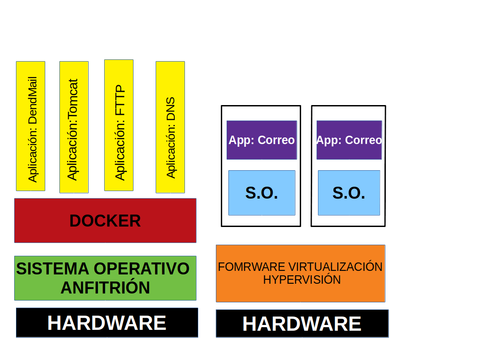

Un software de máquinas virtuales necesita instalar el sistema operativo completo. Ejemplos de sistemas de Virtualización: Para saber más sobre el tema:
Un software de contenedoes es un sistema de virtuazación que compate el kernel con el anfitrión. Se basa en el concepto de microservicio, deonde tengo todos los programas instaados, configurado y funcionando gracias a los contenedores. Ejemplo de software de contenedores:

Para saber más sobre el tema
Um dockerfile es un recta para crear una imagen para una aplicación particular de Docker. De este modo podemos tomar una imagen base, instalarle programas, configurar esos programas y dejarla preparada para crear contenedores a partir de ella.